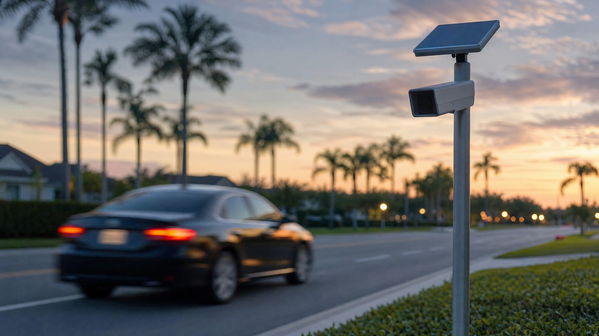

Why a Flock Camera Hit Isn't Probable Cause in Florida

Flock cameras are mounted on poles all over Orange County and its neighbors, silently photographing every license plate that rolls past. When one of those plates matches a database entry, a nearby deputy gets a ping — and sometimes, minutes later, someone gets pulled over. Here is what many drivers never learn until they're sitting in my office: that ping, by itself, is not probable cause. Even the Orange County Sheriff says so.
What a Flock Hit Actually Is
An automated license plate reader (ALPR) is a camera paired with software. It photographs a plate, converts the image to text, and checks that text against "hotlists" — the NCIC stolen vehicle file, FCIC wanted-person entries, agency-created custom lists, and flags for things like suspended registrations. When the software finds a match, it pushes an alert to patrol units in the area, usually within seconds. WKMG's July rundown of Central Florida deployments shows just how many local agencies — Orange County included — now run these networks.
Notice what's missing from that chain: a human being. Nobody watched a crime happen. Nobody saw who was driving. A Flock hit is a machine-generated tip that a plate number matched a database entry at some point in time. Whether the camera read the plate correctly, whether the database entry is still valid, and whether the person behind the wheel has anything to do with either — the alert answers none of that.
Probable Cause Refresher, Applied to a Ping
Probable cause requires facts that would lead a reasonable officer to believe a crime has been committed — and Florida's Stop and Frisk Law, F.S. 901.151, requires at minimum a reasonable, articulable suspicion of criminal activity before an officer may detain you. I've written a full breakdown of what probable cause means in a Florida criminal case, so I won't repeat it here. The short version: hunches, tips, and unverified alerts don't clear the bar on their own.
In Whren v. United States, 517 U.S. 806 (1996), the U.S. Supreme Court held a traffic stop is reasonable when officers have probable cause of an actual traffic violation. An ALPR alert supplies no observed violation at all — the car was simply driving past a camera. And the Florida Supreme Court in State v. Teamer, 151 So. 3d 421 (Fla. 2014), held that a bare discrepancy between a vehicle and its database record — there, a color mismatch — does not, standing alone, create reasonable suspicion for a stop. A Flock ping is exactly that kind of bare database discrepancy until an officer independently verifies it.
What Sheriff Mina Told County Commissioners in July
Don't take a defense lawyer's word for it. At an Orange County budget meeting last month, responding to Commissioner Nicole Wilson's privacy concerns, Sheriff John Mina said it plainly, as reported by Fox 35 Orlando:
The Sheriff's Own Words
"All that technology, flock cameras, artificial intelligence, facial recognition, that doesn't give us probable cause, right? That just points us in the right direction."
That statement mirrors what ALPR training and policy require: the alert points, and the officer must then verify — visually confirm the plate matches the alert, confirm the hit is still active, and develop independent grounds before making a stop. When the head of the county's largest law enforcement agency concedes the technology doesn't supply probable cause, an officer who stopped you on the ping alone has a real problem.
What F.S. 316.0777 Prohibits
The Florida Legislature has drawn its own line. F.S. 316.0777 defines automated license plate recognition systems and flatly prohibits using ALPR data to issue a notice of violation or a uniform traffic citation. It permits cameras in state-highway rights-of-way only at a law enforcement agency's request for active criminal intelligence or investigative purposes, and it makes personal identifying information captured by these systems confidential. A companion statute, F.S. 316.0778, requires a retention schedule capping how long ALPR data may be kept at all — which matters when a "hit" traces back to stale data. I cover the ticketing side in detail in my post on whether a Flock camera can give you a ticket in Florida.
Think about what that framework says: the Legislature won't let this technology support even a traffic ticket on its own. It is an investigative pointer, not proof. That legislative judgment is a powerful backdrop when a stop — and everything found during it — rests on nothing but a camera's say-so.
How Flock Hits Go Wrong
As a former Florida Highway Patrol trooper, I ran plenty of plates. The failure modes aren't hypothetical — they're the reason verification steps exist:
- Misread characters: ALPR software confuses 8s and Bs, 0s and Os, and can match a plate number from the wrong state entirely. The alert photo and the actual plate need a human comparison.
- Stale hotlists: A vehicle recovered weeks ago or a warrant already resolved can linger in a database. In Shadler v. State, 761 So. 2d 279 (Fla. 2000), the Florida Supreme Court suppressed evidence where a stop rested on the state's own erroneous driver-license records — the same logic applies to a stale ALPR hit.
- The owner isn't the driver: Under Kansas v. Glover, 140 S. Ct. 1183 (2020), an officer may infer the registered owner is driving — but only absent information suggesting otherwise. If the owner is a 60-year-old man and the visible driver is a young woman, that inference collapses. This matters most in suspended-license cases under F.S. 322.34, the most common charge born from owner-based alerts.
Recent Florida events underscore how real these failures are. Fox 35 Orlando reported that Sumter County suspended its entire license plate reader program after a detective was accused of misusing it. And just this month, News 6 (ClickOrlando) reported that Flock itself announced mandatory platform changes after documented misuse — cutting retention to seven days, requiring agencies to state specific reasons for searches, and mandating audit tools. When even the vendor concedes its system needed guardrails, courts should look hard at stops built on nothing but its alerts.
The Ping-Only Stop
The defense-critical fact pattern is the officer who stops a car on the alert alone: no visual confirmation of the plate, no check that the hit is still active, no look at whether the driver matches the registered owner, no observed traffic violation. That stop is vulnerable — and everything that flowed from it may be too.
If You Were Stopped After an ALPR Alert
Most people charged after a plate-reader stop focus entirely on the charge — the suspended license, the contraband, the warrant. The stop itself deserves at least as much scrutiny. If the detention wasn't supported by reasonable suspicion or probable cause, a motion to suppress can exclude the evidence the stop produced, and cases frequently collapse without it. Knowing your rights during a Florida traffic stop helps in the moment, but the legal fight over the stop happens afterward, in court.
Questions Your Attorney Will Ask About the Stop
- Did the officer visually confirm the plate against the alert photo before stopping you?
- Was the hotlist entry still active — or stale data past its F.S. 316.0778 retention window?
- Could the officer see that the driver didn't match the registered owner?
- Did the officer observe any independent traffic violation, or was the ping the only basis?
How a Criminal Defense Attorney Can Help
If you're facing charges after an ALPR-based stop in Orlando, an experienced defense attorney can obtain the alert data, the officer's CAD records, and body-camera footage to reconstruct exactly what the officer knew — and didn't know — before the stop. As a former State Trooper and Deputy Sheriff, I understand how law enforcement builds these cases, what their own policies require before a stop, and how to challenge a stop that skipped the verification steps. When the sheriff himself says the technology "just points us in the right direction," the gap between the ping and a lawful stop is where your defense lives.
Stopped After a License Plate Reader Alert?
If you were stopped or charged after a license plate reader alert in Orange County, the legality of the stop itself deserves review. A defective stop can affect everything that followed — contact Lotter Law to have it examined.
Contact Lotter Law at 407-500-7000 for a free consultation.

Jeff Lotter
Criminal Defense Attorney | Former State Trooper
Jeff Lotter is an Orlando criminal defense attorney and former Florida Highway Patrol trooper. He uses his law enforcement background to build stronger defenses for clients facing criminal charges.
Related Articles
Probable Cause in Florida: What It Means for Your Criminal Case | Lotter Law Blog
Forensic Video Analysis and What It Means for Your Criminal Case | Lotter Law Blog
Can a Flock Camera Give You a Ticket in Florida? ALPR Law
Flock cameras in Orlando record plates, not tickets. Learn how Florida's ALPR law (F.S. 316.0777) works, how hits trigger stops, and when to…